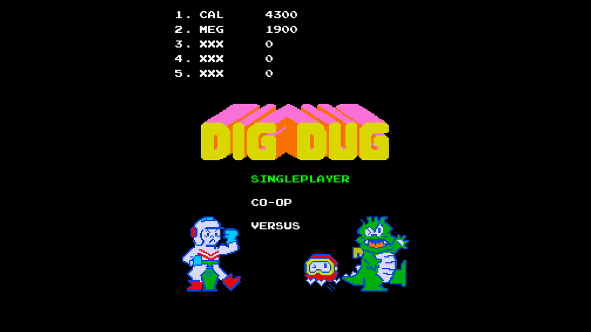
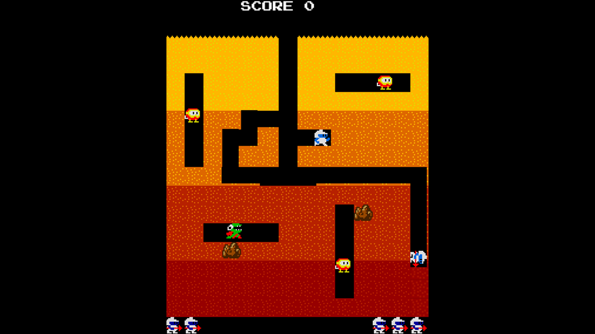

2D Game Engine + DigDug
As part of my Game Development program at Howest - Digital Arts and Entertainment, I spent one semester building a component-driven 2D engine and then implemented a DigDug clone on top of it. The goal of this assignment was to teach us some of the key gameplay programming patterns, how/when to apply them and how they interact with one another.
Features
Technologies Used
Visual Studio as IDE with C++20
Github for version control